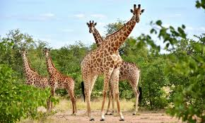

Jirafas
 En Kenia se pueden encontrar jirafas en praderas, bosques y matorrales. Las jirafas son herbívoras y se alimentan de una gran variedad de árboles.
Amenazas
Las jirafas en Kenia enfrentan amenazas como la caza furtiva, la pérdida de hábitat y la enfermedad.